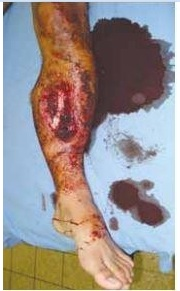

Questão 1 · Condutas em Fraturas Expostas · 4000124053No tratamento inicial da fratura exposta, o debridamento cirúrgico tem como objetivo:
A promover o fechamento da ferida.
B manter os fragmentos ósseos junto ao foco.
C remover tecidos desvitalizados.
D criar uma ferida estéril.
E reparar as lesões vasculares.
Questão 2 · Classif icação · Condutas em Fraturas Expostas · 4000116842Paciente vítima de atropelamento, com imobilização em perna direita, curativo em faixa. Ao exame físico, evidenciado ferimento extenso na perna com mais de 10 cm, com presença de sangramento ativo, com gotículas de gordura no mesmo. Não havia presença de asfalto, grama ou outras contaminações na ferida. Raio X evidenciava fratura multifragmentada dia saria de tíbula e fíbula. Qual a classificação da fratura, de acordo com a classificação de Gustillo e Anderson, e qual antibioticoterapia deve ser iniciado:
A Tipo III, cefalosporina de primeira geração + aminoglicosideo.
B Tipo III, macrolideo + quinolona.
C Tipo I, cefalosporina de primeira geração.
D Tipo II, cefalosporina de terceira geração.
E Tipo III, cefalosporina de terceira geração.
Questão 3 · Classif icação · 4000111957Paciente sexo masculino, 43 anos, vítima de acidente de trânsito (queda da motocicleta). Levado por familiares à Unidade Básica de Saúde mais próxima. Embora confuso, respondia aos comandos e abria os olhos somente quando solicitado. Apresentava exposição óssea da fíbula esquerda de 2,0 cm, sem avulsão de tecidos e com pulsos distais preservados. Após avaliação inicial adequada, o clínico da UBS solicita transferência ao SAMU. Para cumprir corretamente o protocolo, necessita classificar o nível de consciência e a fratura. Qual das alternativas melhor representa o quadro clínico:
A Glasgow 13 e Gustilo-Anderson II.
B Glasgow 11 e Gustilo-Anderson I.
C Glasgow 5 e Gustilo-Anderson IIIA.
D Glasgow 12 e Gustilo-Anderson IIIA.
E Glasgow 13 e Gustilo-Anderson IIIB.
Questão 4 · Classif icação · 4000076841No seu hospital dá entrada um homem vítima de arma de fogo na perna direita. A ferida apresenta laceração extensa, cobertura adequada do osso e fratura segmentar. Usando a Classi cação de Gustilo-Anderson para fraturas abertas, podemos classificar como sendo tipo:
A II.
B III.
C III A.
D III B.
E III C.
Questão 5 · Condutas em Fraturas Expostas · 4000075783No tratamento da fratura exposta, em membro superior e sem contaminação grosseira, os estudos mais recentes têm demonstrado que o índice de infecção não altera se a abordagem cirúrgica inicial for executada no limite de tempo, após o trauma, de até:
A 6 horas
B 12 horas
C 18 horas
D 24 horas
Questão 6 · Condutas em Fraturas Expostas · 4000063079No tratamento da fratura exposta devemos realizar, exceto:
A Profilaxia antitetânica.
B Antibioticoterapia.
C Curativo compressivo.
D Fixação.
Questão 7 · Condutas em Fraturas Expostas · 4000041025Em relação ao atendimento inicial de um paciente com fratura exposta, é INCORRETO:
A Introduzir precocemente antibioticoterapia.
B Imobilizar provisoriamente uma fratura de cotovelo com imobilização axilo-braquial.
C Cobrir o ferimento com curativo limpo e avaliar situação vacinal.
D Iniciar analgesia após a realização do exame de imagem.
Questão 8 · Classif icação · Condutas em Fraturas Expostas · 4000030313Durante o trabalho em área rural, um homem de 36 anos sofreu um acidente com extenso ferimento, deixando exposta uma fratura de extremidade distal da tíbia. Ao exame físico, observa- se grande sangramento na região do ferimento, mas com boa perfusão dos artelhos. Qual dos seguintes esquemas esquema de antibióticos é o mais adequado nessa situação?
A Cefalosporina de 1ª geração + vancomicina.
B Cefalosporina de 1ª geração + aminoglicosídeo + penicilina cristalina.
C Cefalosporina de 1ª geração + penicilina cristalina.
D Cefalosporina de 1ª geração + aminoglicosídeo.
Questão 9 · Condutas em Fraturas Expostas · 4000029787Fratura exposta é uma expressão que se refere a um amplo espectro de lesões, desde perfuração na pele até esmagamento do membro. O tratamento adequado das fraturas expostas continua sendo um desa o para os cirurgiões ortopedistas que lidam com trauma. Nas fraturas expostas tipo Gustilo III, o esquema de antibiótico definido como de primeira escolha é:
A cefalosporina de primeira geração.
B cefalosporina de terceira geração.
C cefalosporina de primeira geração e penicilina.
D cefalosporina de primeira geração e aminoglicosídeo.
Questão 10 · Classif icação · Condutas em Fraturas Expostas · 4000011391Homem, 20 anos de idade, vítima de acidente de motociclístico é trazido ao pronto socorro. Exame físico: via aérea pérvia, frequência respiratória = 16 irpm; MV+ bilateral sem RA; FC = 90 bpm, PA = 140 x 80 mmHg; Glasgow 15 (pupilas normais). Apresenta dor, deformidade anteromedial do terço médio da perna esquerda, com ferimento corto- contuso de 5 cm, presença de detritos de terra junto ao ferimento, pulso pedioso palpável e boa perfusão periférica. Assinale a alternativa correta quanto ao diagnóstico e conduta inicial.
A Fratura exposta da tíbia (Gustilo-Anderson I), antibioticoterapia, sutura do ferimento e imobilização gessada.
B Fratura exposta da tíbia (Gustilo-Anterson II), antibioticoterapia, sutura do ferimento e tração cutânea ou esquelética e cirurgia eletiva.
C Politraumatizado (Injury Severity Score 75), internação em UTI aos cuidados da equipe de terapia intensiva.
D Politraumatizado (Injury Severity Score 50), internação em enfermaria aos cuidados da cirurgia geral e plástica.
E Fratura exposta da tíbia (Gustilo-Anderson III), antibioticoterapia e tratamento cirúrgico urgente.
Questão 11 · Fratura exposta · 4000111087As fraturas expostas representam uma comunicação entre o ambiente externo e o osso. Assinale a alternativa INCORRETA.
A Sempre que, no mesmo segmento do membro, existam uma ferida aberta e uma fratura, esta é considerada exposta até prova em contrário.
B Deve-se fazer profilaxia para o tétano.
C As cefalosporinas de primeira geração são administradas para todos os doentes com fraturas expostas e aminoglicosídeos ou outros antibióticos apropriados para Gram- negativos, podem ser administrados em lesões mais severas.
D Todos os doentes com fraturas expostas devem ser tratados com antibióticos orais o mais brevemente possível.
Questão 12 · Fratura exposta · 4000049462Criança de 6 anos sofre queda em pula-pula apresentando deformidade com desvio volar do antebraço esquerdo. Ao exame físico apresenta pulsos presentes e palpáveis simétricos, perfusão distal sem alterações, neurológico sem alterações sensitivas, ferimento puntiforme em dorso do punho ipsilateral. No atendimento inicial foi realizado curativo do ferimento e imobilização com tala. Assinale a alternativa incorreta:
A a imobilização com tala é indicada para o caso, pois alivia a dor do paciente e facilita o transporte.
B caso o sangramento da ferida contenha gotículas de gordura se trata de uma fratura exposta.
C o exame neurovascular deve ser realizado antes e após a imobilização.
D o prazo ideal para o tratamento adequado deste paciente é de no máximo 6 á 8 horas.
E Síndrome Compartimental não ocorre se o paciente estiver imobilizado adequadamente.
Questão 13 · Condutas em Fraturas Expostas · 4000012505De acordo com a décima edição do ATLS, o antibiótico de escolha para fraturas expostas menores que 1 centímetro com contaminação mínima e que tenha alergia à Penicilinas:
A Cefazolina.
B Clindamicina.
C Gentamicina.
D Piperacilina + Tazobactam.
Questão 14 · Condutas em Fraturas Expostas · 4000095938As fraturas expostas representam uma comunicação entre o ambiente externo e o osso. Juntamente com a contaminação bacteriana, essas lesões estão propensas a desenvolver infecções, problemas de cicatrização e função. Segundo a décima edição do ATLS, o antibiótico de escolha para fraturas expostas com contaminação por terra, independentemente da severidade da lesão, é:
A Cefazolina.
B Cefalozina associada à Clindamicina.
C Cefazolina associada à Gentamicina.
D Piperacilina e Tazobactam.
Questão 15 · Fratura exposta · 4000068676As fraturas expostas são consideradas emergências dentro da Ortopedia e Traumatologia. Assinale a única alternativa correta abaixo:
A Na classificação de Gustillo-Anderson, leva-se em consideração a lesão de partes moles para o tipo de abordagem cirúrgica
B Nas fraturas expostas grau II de Gustillo-Anderson não se deve fazer a fixação interna devido às lesões de partes moles
C A antibioticoterapia somente será instituída após o resultado da cultura e antibiograma, pelo risco de aumento de resistência bacteriana
D Devido a alta possibilidade de infecção, deve ser instituído antibioticoterapia de amplo espectro em toas as fraturas expostas
E A haste intramedular é totalmente contraindicada nas fraturas expostas
Questão 16 · Classif icação · 4000041560Das lesões abaixo, a que, quando presente em um paciente, indica fratura exposta tipo lll-C de Gustilo & Anderson é:
A Lesão vascular.
B Ferida com diâmetro de 5 cm.
C Fratura ocorrida em zona urbana.
D Lesão nervosa
E Trombose venosa profunda
Questão 17 · Condutas em Fraturas Expostas · Lesão vascular · 4000050122Um homem de 26 anos esteve envolvido em um grave acidente de motocicleta. Por ocasião da admissão, ele tinha uma deformidade óbvia da perna, pulsos e sinais de Doppler ausentes ao nível do tornozelo. As funções motoras e sensoriais estão intactas. As radiogra as da perna mostram uma fratura cominutiva da tíbia proximal. A angiogra a pré-operatória revela uma artéria poplítea infragenicular obstruída. Identi que a(s) sequência(s) de etapas de tratamento mais apropriada(s) para proporcionar um resultado ótimo para este paciente e assinale o que for correto.
A Estabilização imediata por fixação externa da fratura e, a seguir, reparo da lesão arterial.
B Colocação de um shunt na lesão arterial, estabilização externa da fratura, reparo da lesão arterial, estabilização externa da fratura, reparo arterial e fasciotomia.
C Reparo arterial e fixação externa à fratura e fasciotomia.
D Amputação primária no nível da fratura.
Questão 18 · Condutas em Fraturas Expostas · 4000049841Durante plantão na central de regulação de urgência, o técnico auxiliar de regulação médica transfere para o médico regulador uma chamada telefônica durante a qual ele deve orientar os cuidados iniciais para uma vítima de acidente de trabalho com serra elétrica. O paciente, um operário do sexo masculino, com 20 anos de idade, sofreu amputação do polegar direito e encontra-se consciente e orientado, apresentando sangramento local, que cessa à compressão manual do coto de amputação. Havendo a intenção de reimplante do membro amputado, além de cobrir o ferimento no coto com pano limpo, que orientações deverão ser dadas pelo médico regulador, por telefone, até a chegada da ambulância ao local do chamado e posterior condução do paciente à unidade hospitalar especializada?
A Efetuar garrote no punho; lavar o dedo amputado em água corrente e colocá-lo em recipiente com gelo cobrindo-o completamente.
B Efetuar compressão local; lavar o dedo amputado em água corrente e colocá-lo em recipiente com gelo, cobrindo-o completamente.
C Efetuar garrote no punho; cobrir o dedo amputado com pano limpo e colocá-lo em um saco plástico e, depois, em um recipiente com gelo.
D Efetuar compressão local; cobrir o dedo amputado com pano limpo e colocá-lo em um saco plástico e, depois, em um recipiente com gelo.
Questão 19 · Classif icação · 4000015555Considere hipoteticamente que o paciente R. A. S., de 60 anos de idade, agenda consulta ambulatorial de retorno para entregar resultados de uma endoscopia digestiva alta e de uma ultrassonogra a de rins e vias urinárias. O paciente trouxe receita do vizinho que teve o mesmo problema de saúde, porém melhorou após o uso de determinados medicamentos prescritos. R. A. S. apresenta antecedente pessoal de fratura exposta da tíbia com dano extenso às partes moles e antecedente familiar de acalasia no pai. Estava ansioso porque, após pesquisa na internet, assemelhou os respectivos sintomas aos de alguns tipos de câncer. Com base nesse caso clínico, e considerando os conhecimentos médicos a ele relacionados, julgue o item a seguir. A fratura relatada pelo paciente poderia ser classificada como Gustillo - Anderson tipo II.
A Certo.
B Errado.
Questão 20 · Classif icação · Condutas em Fraturas Expostas · 4000011120A fratura é considerada exposta quando se comunica com o meio externo. Gustilo e Anderson elaboraram classificações mais comumente citadas das fraturas com lesão de partes moles. Essa classificação proporcionou informações úteis em relação ao prognóstico e tratamento da extremidade lesada. Indique a alternativa que associa CORRETAMENTE a lesão, segundo esta classificação, a seu respectivo antibiótico de escolha.
A II – lesão de pele aberta < 1 cm, limpa, mais provavelmente uma lesão de dentro para fora, mínima contusão muscular, fratura oblíqua ou transversa simples. Antibióticos de escolha são cefalosporinas de primeira geração.
B IIIA – laceração > 1 cm, com extenso dano de partes moles, retalhos ou avulsão, esmagamento moderado, fratura oblíqua curta ou transversa simples com mínima cominução. Antibiótico de escolha é cefalosporina de primeira geração associado a aminoglicosídeo.
C IIIB – laceração extensa, com cobertura adequada do osso, fratura segmentar, lesões por arma de fogo. Antibiótico de escolha é cefalosporina de primeira geração associado a aminoglicosídeo.
D IIIC – extenso dano de partes moles, incluindo músculo, pele, estruturas neurovasculares, frequentemente uma lesão de alta velocidade com um severo componente de esmagamento, inclui qualquer lesão aberta com lesão vascular necessitando de reparo. Antibiótico de escolha é cefalosporina de primeira geração, associado a aminoglicosídeo e penicilina G.
Questão 21 · Condutas em Fraturas Expostas · 4000122209Motociclista de 25 anos, vítima de acidente há 30 minutos, apresenta fratura exposta da tíbia esquerda como mostra a figura a seguir (VER IMAGEM). Após a realização dos procedimentos de atendimento ao politraumatizado (ATLS), foi constatado que o paciente não apresentava outras alterações ou lesões concomitantes. Além da avaliação da perfusão e dos pulsos distais, os procedimentos indicados para o tratamento da fratura exposta são

A antibioticoterapia; anestesia local e sutura de partes moles; imobilização da fratura com fixador externo.
B antibioticoprofilaxia e administração de anti-inflamatório; profilaxia contra o tétano; anestesia local, desbridamento e sutura; imobilização da fratura.
C antibioticoterapia e profilaxia do tétano; anestesia geral ou raqui, lavagem exaustiva do membro e foco da fratura; desbridamento cirúrgico; fixação da fratura com fixador externo.
D administração de anti-inflamatórios e analgésicos; anestesia geral; lavagem exaustiva do membro e foco da fratura; desbridamento cirúrgico e sutura de partes moles; fixação da fratura com fixador externo.
Questão 22 · Classif icação · Condutas em Fraturas Expostas · 4000073154Em um paciente com fratura exposta dos ossos da tíbia e fíbula, ocasionada em área rural, com importante lesão de partes moles, mas com possibilidades de cobertura óssea, com pulsos distais presentes e sinais radiográ cos de fratura multifragmentada deve-se:
A Realizar lavagem mecanicocirúrgica, desbridamento e osteossíntese com haste intramedular na tíbia e iniciar cefalosporina de primeira geração, aminoglicosídeo e penicilina cristalina venosa pois trata-se de uma fratura exposta do tipo IIIC de acordo com Gustilo e Anderson.
B Realizar lavagem mecanicocirúrgica, desbridamento e osteossíntese com fixador externo na tibia e iniciar cefalosporina de primeira geração venosa pois trata-se de uma fratura exposta do tipo IIIB de acordo com Gustilo e Anderson.
C Realizar lavagem mecanicocirúrgica, desbridamento e osteossíntese com haste intramedular da tíbia e iniciar cefalosporina de primeira geração e aminoglicosídeo venosos pois trata-se de uma fratura exposta do tipo IIIA de acordo com Gustilo e Anderson.
D Realizar lavagem mecanicocirúrgica, desbridamento e osteossíntese com fixador externo na tíbia e iniciar cefalosporina de primeira geração e aminoglicosídeo venoso pois trata-se de uma fratura exposta do tipo IIIA de acordo com Gustilo e Anderson
E Realizar lavagem mecanicocirúrgica, desbridamento e osteossíntese com fixador externo na tíbia e iniciar cefalosporina de primeira geração, aminoglicosídeo e penicilina cristalina venosa pois trata-se de uma fratura exposta do tipo IIIA de acordo com Gustilo e Anderson.
Revisar: possível letra faltando em enunciado
Questão 23 · Classif icação · 4000057750O politraumatizado deve ser avaliado no setor de emergência do hospital e estabilizado de acordo com o protocolo ATLS. Assinale a alternativa que indica o atendimento preconizado nos casos de fratura expostas:
A As radiografias são obtidas somente dentro do centro cirúrgico, pois a priorização da abordagem cirúrgica deve ser imediata.
B As fraturas expostas tipo I de Gustilo-Anderson são as que apresentam moderado dano tecidual, com lesões de pele acima de 10 cm
C As fraturas expostas do tipo III de Gustilo-Anderson podem exigir desbridamento amplo e necessidade de cobertura cutânea.
D As fraturas expostas do tipo I Gustilo-Anderson sempre necessitam fixação externa imediata.
E As fraturas expostas do tipo II de Gustilo-Anderson apresentam menor grau de contaminação dentro da classificação.
Questão 24 · Condutas em Fraturas Expostas · Fraturas luxações e lesões tendíneas do antebraço punho e mão · 4000097948Uma Unidade Básica de Saúde da zona rural recebeu um trabalhador que teve a mão direita esmagada por um moedor de cana. Assinale a alternativa que apresenta a melhor estratégia para a condução do caso.
A Bloqueio anestésico, hemostasia rigorosa, debridamento, estudo radiológico da mão, tratamento definitivo das lesões.
B Bloqueio anestésico, debridamento, hemostasia com bisturi elétrico bipolar e síntese dos ferimentos.
C Realizar limpeza do ferimento, fazer o curativo oclusivo hemostático e transferir o paciente para um centro de maior complexidade.
D Curativo oclusivo-compressivo, antibioticoterapia de amplo espectro, avaliação radiológica das lesões e avaliação com ortopedia.
Questão 25 · Condutas em Fraturas Expostas · 4000078606Qual o esquema de antibioticopro laxia mais indicado em um paciente com fratura de tíbia exposta, que ocorreu em área rural e apresenta traço de fratura segmentar?
A Cefalosporina de primeira geração + aminoglicosídeo + penicilina.
B Cefalosporina de primeira geração + aminoglicosídeo.
C Ciprofloxacino.
D Cefalosporina de primeira geração + penicilina.
E Clindamicina + ciprofloxacino.
Questão 26 · Classif icação · 4000078592Paciente vítima de queda de moto em área rural, apresenta deformidade em coxa direita, com ferida na pele de aproximadamente 7 centímetros, bastante contaminada, com pulsos distais à lesão presentes, boa perfusão capilar e temperatura do membro preservada. Radiogra a de coxa direita demonstra fratura segmentar de fêmur direito. Após lavagem mecanicocirúrgica e debridamento, o cirurgião observa su ciente cobertura óssea pelas partes moles. De acordo com Gustilo e Anderson, esta fratura é classificada como:
A Tipo I.
B Tipo II.
C Tipo IIIA.
D Tipo IIIB.
E Tipo IIIC.
Revisar: possível letra faltando em enunciado
Questão 27 · Fratura exposta · 4000061702Fratura exposta refere-se a um amplo espectro de lesões desde a perfuração da pele em uma fratura oblíqua longa até esmagamento do membro com uma fratura segmentar. Sobre as fraturas expostas é correto afirmar:
A No atendimento pré-hospitalar de uma fratura exposta está contra indicado o fechamento da ferida com curativo estéril até avaliação especializada.
B Para o tratamento das fraturas expostas puntiformes está indicado o uso de antibioticoterapia em esquema tríplice.
C O Staphilococcus Epidermidis é o principal germe causador de infecção primária e secundária nas fraturas expostas.
D A irrigação com soro fisiológico de uma fratura exposta deve ser evitada devido ao risco de embolia gordurosa.
E A contaminação bacteriana é o fator diferencial mais claro e importante e o que também determina a definição de fratura exposta.
Questão 28 · Classif icação · 4000058305A classificação tipo IIIA de Gustilo-Anderson para fraturas expostas da tíbia se refere à fratura exposta com:
A Dano extenso às partes moles com cobertura adequada de tecido mole.
B Fratura exposta com ferida maior que 1 cm sem dano extenso às partes moles.
C Fratura exposta com dano extenso às partes moles com perda de tecido mole, desnudamento periosteal e exposição óssea.
D Fratura exposta com dano extenso às partes moles com lesão arterial que requer reparo.
Questão 29 · Classif icação · Condutas em Fraturas Expostas · 4000012153Paciente de 45 anos, sexo masculino, vítima de acidente automobilístico apresentando fratura exposta de fêmur à direita, classificada como Gustilo tipo I. Com relação ao caso descrito, assinale a alternativa CORRETA:
A Deve-se fazer a limpeza exaustiva da ferida, seguida de fixação externa da fratura.
B Nesse tipo de fratura, os índices de infecção variam de 10% a 20%, daí a importância do uso de antibioticoterapia concomitante.
C Trata-se de uma fratura de fêmur com estabilidade moderada, com laceração cutânea maior que 1 cm, sem sinais de contusão e apresentando musculatura viável.
D Prevenir a ocorrência de infecção, promover a restauração das partes moles e fixar a fratura com alinhamento adequado são os objetivos iniciais para o tratamento.
Questão 30 · Condutas em Fraturas Expostas · 4000009776As fraturas expostas podem acontecer com os mais diversos tipos e energias de trauma. A infecção é a complicação mais comum dessas fraturas. Qual é o método mais eficaz para se prevenir essa complicação?
A Limpeza e desbridamento.
B Profilaxia com antibiótico.
C Fixação externa.
D Pulso de lavagem.
E Hidratação e alimentação precoce do paciente.
Questão 31 · Condutas em Fraturas Expostas · 4000003344Analise as seguintes afirmativas relacionadas ao tratamento das fraturas expostas: I - Todo desbridamento deve ocorrer em ambiente cirúrgico, sob condições rigorosas de assepsia. II - O desbridamento ósseo implica a exposição dos dois extremos do foco fraturário: a limpeza da cavidade medular e a remoção de pequenos fragmentos corticais desvitalizados. III - A cirurgia de desbridamento deve, preferencialmente, ser realizada com isquemia. Está (ão) CORRETA (S):
A Apenas a II;
B I e III;
C I e II;
D Todas estão corretas.
Questão 32 · Fraturas da diáf ise do f êmur · Condutas em Fraturas Expostas · Tratamento · 4000065397Um motociclista sofreu fratura exposta de fêmur. O membro está pálido e com cianose dos dedos. Não se palpa pulso distal. Assinale a conduta mais apropriada:
A Arteriografia imediata com passagem de endoprótese, seguida de fixação da fratura.
B Revascularização imediata com safena ipsilateral.
C Ultrassonografia de partes moles para avaliar possível síndrome compartimental.
D Fixação da fratura, seguida de arteriografia se o pulso se mantiver ausente.
Questão 33 · Condutas em Fraturas Expostas · 4000052233As fraturas abertas representam emergências cirúrgicas porque a longo prazo põe em risco o membro e, em casos de sepse sistêmica, são potencialmente fatais. Sobre as fraturas expostas é correto afirmar:
A O uso de antibióticos e a profilaxia do tétano devem sem realizadas na sala de emergência para qualquer fratura aberta.
B Nos casos de suspeita de contaminação pelo solo, apenas lavar com iodopolvidine para evitar infecção por Clostridium.
C Realizar ampliação dos ferimentos para desbridamente e lavagem seguida de fechamento para evitar infecção nosocomial.
D O tratamento com aparelho gessado é o preconizado pelo fato de não representar agressão aos tecidos moles.
E A irrigação abundante da ferida operatória com solução salina 0,9% causa embolia gordurosa e deve ser evitada.
Questão 34 · Classif icação · 4000013438Quais os fatores que são utilizados para classificar uma fratura exposta segundo a classificação de Gustillo Anderson?
A Energia do trauma, tempo de exposição, grau de contaminação, grau de lesão departes moles, lesões associadas.
B Energia do trauma, grau de contaminação, grau de lesão de partes moles, tamanho da exposição.
C Energia do trauma, grau de contaminação, grau de lesão de partes moles, lesões associadas.
D Energia do trauma, tempo de exposição, grau de contaminação, tamanho da exposição.
E Energia do trauma, grau de contaminação, tempo de isquemia, tamanho da exposição.
Questão 35 · Condutas em Fraturas Expostas · 4000082822Homem de 18 anos é admitido no Serviço de Emergência do HGR após acidente de moto com fratura exposta em tíbia direita. Após descartar lesão de outros orgãos alvo, a conduta médica mais importante para a prevenção de infecção do sítio de fratura é:
A Agilidade na intervenção cirúrgica (<12h).
B Antibioticoprofilaxia.
C Hemotransfusão.
D Sutura da ferida.
E Redução manual da fratura.
Questão 36 · Fratura exposta · 4000059855Acidentes envolvendo motociclistas caracterizam um sério problema de saúde pública nos centros urbanos do Brasil e produzem, entre outros traumas, fratura da diá se da tíbia, a sede mais comum de fratura em ossos longos. Com relação à fratura da diáfise da tíbia, assinale a alternativa correta.
A A radiografia é o exame determinante para definir o tratamento e o prognóstico.
B As bactérias envolvidas em infecção originam-se nos contaminantes pré-hospitalares.
C Nas fraturas expostas, o tratamento precoce com antibióticos reduz a taxa de infecção.
D Perfusão e pulso periféricos são importantes para afastar síndrome compartimental.
E Quando expostas, o fechamento deve ser retardado para diminuir a taxa de infecção.
Questão 37 · Condutas em Fraturas Expostas · 4000027277O grande aumento da incidência de pacientes politraumatizados já se tornou uma epidemia e um problema de saúde pública. O primeiro atendimento é fundamental para o melhor prognóstico do paciente. No tratamento das fraturas expostas, para um melhor prognóstico:
A A limpeza da ferida com soro fisiológico e curativo no atendimento pré-hospitalar é dispensável.
B O uso de antibióticos deverá ser instituído após o procedimento cirúrgico, sendo dispensável antes dessa intervenção.
C A cirurgia de limpeza mecânica e desbridamento, dada a natureza da lesão, pode ser postergada.
D A estabilização da fratura exposta grave com métodos de fixação interna é inicialmente desnecessária.
Questão 38 · Classif icação · 4000025545Paciente chega ao HUGO após queda de moto com dor em perna direita com deformação e limitação funcional do membro afetado. Ao exame físico: fratura exposta maior que 1 cm de extensão, sem dano excessivo das partes moles, sem retalho ou avulsão. A Radiogra a confirma a fratura de tíbia e fíbula. Qual o grau da lesão segundo a classificação de Gustilo e Anderson?
A Grau I.
B Grau II.
C Grau IIIa.
D Grau IIIb.
E Grau IIIc.
Questão 39 · Fraturas e luxações do pé · 4000087079Qual a conduta mais adequada para o primeiro atendimento hospitalar de um paciente trazido à emergência com lesão grave no pé, provocada por cortador de grama?
A Realizar a limpeza do ferimento, que deve ser deixado aberto.
B Realizar analgesia e imobilização gessada.
C Realizar exame radiológico e fixação das fraturas.
D Indicar antibioticoterapia profilática.
E Solicitar a presença imediata de um cirurgião plástico.
Questão 40 · Condutas em Fraturas Expostas · 4000051984Paciente de 25 anos sofreu queda de altura de 2 metros, com trauma em membro inferior direito. Atendido no serviço de emergência com 1 hora de evolução, é diagnosticada uma fratura transversa de ossos da perna, associada a ferimento da pele de 3 cm, com exposição dos fragmentos ósseos. A ferida apresenta-se de aspecto limpo e não há sinais de comprometimento vascular ou nervoso. Assinale a alternativa que indica o tratamento adequado dessa lesão.
A Devido à evolução de menos de 6 horas, considera-se que não há contaminação, e o uso de antibióticos não é indicado.
B Por ser uma fratura exposta, é contraindicada a fixação com materiais internos (hastes intramedulares e placas com parafusos).
C Como é um trauma de baixa energia e a ferida é limpa e pequena, recomenda-se a limpeza e sutura primária na sala de emergência, imobilização com tala gessada e fixação como uma fratura fechada após alguns dias.
D A fratura deve ser estabilizada primariamente com fixador externo e mudada para fixação interna após 2 a 3 semanas.
E Estabilização com haste intramedular, porque não aumenta o risco de infecção se comparada aos fixadores externos e placas.
Questão 41 · Condutas em Fraturas Expostas · Lesão vascular · 4000117515Um motociclista sofreu fratura exposta de fêmur. O membro está pálido e com cianose dos dedos. Não se palpa pulso distal. Conduta mais apropriada:
A ultrassonografia de partes moles para avaliar possível síndrome compartimental.
B arteriografia imediata com passagem de endoprótese, seguida de fixação da fratura.
C revascularização imediata com safena ipsilateral.
D limpeza e fixação da fratura com aquecimento do membro.
E fixação da fratura, seguida de arteriografia se o pulso se mantiver ausente.
Questão 42 · Condutas em Fraturas Expostas · 4000079915No tratamento inicial da fratura exposta, a conduta de maior importância é:
A antibioticoterapia
B desbridamento dos tecidos desvitalizados
C estabilização da fratura com fixação externa
D estabilização da fratura com fixação interna
Questão 43 · Fratura exposta · 4000070139Em relação às fraturas expostas: I - São comuns na tíbia devido à falta de cobertura muscular em toda a sua face anteromedial. II - De acordo com a classificação de Gustilo e Anderson, as fraturas expostas da tíbia, com ferida da pele menor do que um centímetro, mas com radiografia demonstrando fratura segmentar, são classificadas como grau III. III - Em fratura exposta grau I (Gustilo e Anderson), deve-se iniciar esquema antibiótico com Cefalosporina de Primeira Geração e Aminoglicosídeo. IV- Os objetivos do tratamento cirúrgico das fraturas expostas da tíbia consistem em lavagem mecânica e cirúrgica, desbridamento dos tecidos desvitalizados e estabilização da fratura. V - A classificação de Gustilo e Anderson leva em consideração a extensão da lesão de pele apenas. Quais das afirmativas acima estão CORRETAS?
A I, II e III.
B II, IV e V.
C I, II, IV e V.
D I, II e IV.
E Todas estão corretas.
Questão 44 · Amputação X Preservação de Membros · Condutas em Fraturas Expostas · 4000048849As fraturas expostas associadas à lesão vascular são classificadas como tipo III c de Gustillo. Nessas fraturas, a lesão vascular está frequentemente associada a perdas ósseas, a falta de cobertura das partes moles e também a lesões neurológicas. Com relação à abordagem terapêutica dessas fraturas, é correto afirmar:
A Apesar da gravidade das lesões, os índices de indicação de amputação do segmento envolvido são menores do que 5%.
B Na fratura da tíbia, a lesão complexa de partes moles associada à ruptura do nervo tibial posterior é indicação praticamente absoluta de amputação.
C Deve-se tentar sempre o tratamento cirúrgico e a manutenção do membro mesmo em situações de grave perda óssea e de cobertura cutânea, pois a amputação deve ser realizada em um segundo ou terceiro tempo.
D Nos membros inferiores, a angiografia é sempre indicada, mesmo que o nível de lesão esteja evidente.
E O reparo da lesão vascular deve preceder a estabilização do esqueleto.
Questão 45 · Condutas em Fraturas Expostas · 4000052009Com relação ao uso de antibióticos no tratamento das fraturas expostas, é correto afirmar que:
A devemos usar rotineiramente antibióticos de última geração.
B seu uso é discutível, pois o melhor tratamento para fraturas expostas é limpeza mecânica adequada, com desbridamento de tecido desvitalizado.
C o uso de antibióticos bacteriostáticos é melhor que o de bactericidas.
D o agente etiológico mais frequente nas infecções em fraturas expostas é o Streptococcus e, portanto, deve ser usado antibiótico específico.
E antibioticoterapia isolada é suficiente para tratar fraturas expostas sem a necessidade de outros cuidados.
Questão 46 · Condutas em Fraturas Expostas · 4000081699Paciente de 25 anos, vítima de acidente automobilístico, é transportado por ambulância ao setor de emergência de um hospital com colar cervical e prancha longa. Queixa-se de dor intensa na coxa direita. Ao exame físico, constatou-se ferimento puntiforme no terço médio e anterolateral da coxa direita, deformidade e grande aumento de volume dos compartimentos da coxa. As radiografias visibilizaram fratura comunitiva do fêmur direito. Assinale a alternativa correta: Respostas: 1 12 23 34 45
A Fratura exposta do fêmur direito é descartada, pois não há exposição óssea evidenciada na inspeção.
B Síndrome compartimental associada à fratura diafisária do fêmur é rara, pois o hematoma destas fraturas não costuma ser volumoso.
C Além de radiografias do fêmur direito, há indicação de tomografia computadorizada para melhor definição do tipo de fratura e conduta a ser adotada.
D Se há contato do hematoma ou foco de fratura com o meio externo, a fratura é considerada exposta e a fixação interna estará indicada, caso o tempo decorrido do acidente seja menor que seis horas.
E O tratamento conservador com férula de Braun seguido de gesso pelvipodálico é o mais indicado se o diagnóstico é fratura fechada do terço médio do fêmur.